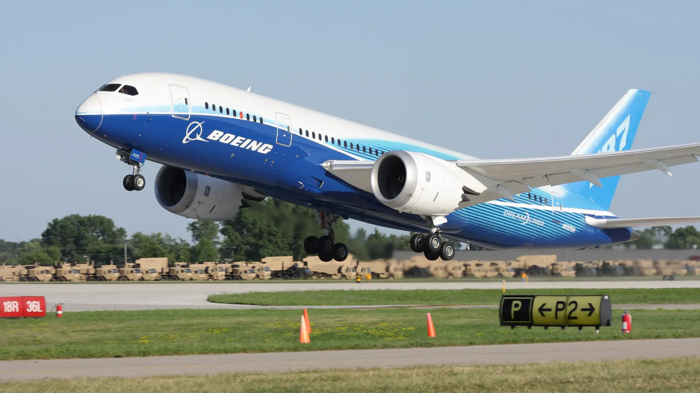

Overview
The Boeing 787 Dreamliner is a wide-body, twin-engine airliner designed for long-haul flights. Known for its advanced aerodynamics, fuel efficiency, and passenger comfort, the 787 has revolutionized air travel. It was the first commercial aircraft to be constructed primarily from composite materials, resulting in reduced weight and improved fuel efficiency. With a range of up to 15,200 km (9,400 miles), the Dreamliner is capable of flying non-stop on many long-haul routes. The 787 offers quieter cabins, better humidity control, and larger windows for a more comfortable flying experience.
Specifications
| Feature | Details |
|---|---|
| Manufacturer | Boeing |
| First Flight | December 15, 2009 |
| Service Entry | 2011 |
| Length | 56.7 meters (186 ft 1 in) |
| Wingspan | 60.1 meters (197 ft 4 in) |
| Height | 16.9 meters (55 ft 5 in) |
| Max Takeoff Weight | 227,930 kg (502,500 lbs) |
| Maximum Speed | 913 km/h (567 mph, Mach 0.86) |
| Cruising Speed | 905 km/h (562 mph, Mach 0.85) |
| Range | 15,200 km (9,400 miles) |
| Service Ceiling | 43,000 feet (13,106 meters) |
| Fuel Efficiency | 20% more fuel-efficient than previous aircraft in its class |
| Engine Type | GEnx-1B (General Electric) or Trent 1000 (Rolls-Royce) |
Airlines Using the Boeing 787 Dreamliner
| Airline |
|---|
| American Airlines |
| United Airlines |
| Japan Airlines |
| All Nippon Airways (ANA) |
| British Airways |
| Qatar Airways |
| Air Canada |
| Singapore Airlines |
| Royal Brunei Airlines |
| Etihad Airways |
Crash History
The Boeing 787 Dreamliner has had a relatively low incidence of crashes compared to other aircraft in its class, with its modern design and advanced safety features contributing to its strong safety record. As of now, the 787 has not experienced any major accidents in commercial service. The aircraft's design incorporates a variety of safety measures, including advanced cockpit technology, fire suppression systems, and redundant safety features. The 787 has proven to be reliable in service and continues to be a preferred choice for many airlines around the world.